útil!
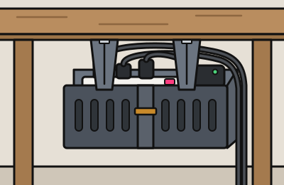
Cesto Sob a Mesa
Cesto em módulos que se encaixam, parafusado embaixo do tampo, para tirar do chão a régua de tomada e as fontes. Imprime sem suporte e vem em quantos pedaços a sua impressora pedir.
Projetos que fiz com IA, por diversão e sem compromisso. Funcionam na maior parte do tempo.
Geradores de peças para imprimir em 3D: ajuste as medidas e baixe o STL. Ver a página de impressão 3D →
útil!

Cesto em módulos que se encaixam, parafusado embaixo do tampo, para tirar do chão a régua de tomada e as fontes. Imprime sem suporte e vem em quantos pedaços a sua impressora pedir.
zap!
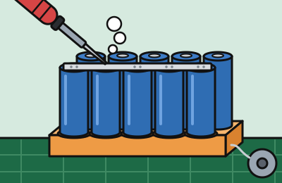
Placa com encaixes que segura as células em pé na hora de soldar o pack. Serve para 14500, 18650, 21700 e 26650, com fileiras alinhadas ou intercaladas.
nham!
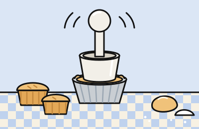
Emoldurador em tronco de cone, com pino para segurar, que forra a forminha de massa num aperto só. Pode sair maciço ou oco, para gastar menos filamento.
Jogos com os bichos da casa. Ver a página dos jogos →
bip!
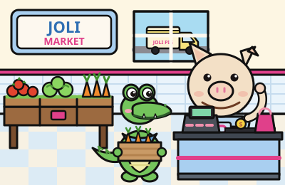
Jogo de mercadinho em voxel, irmão da Fazenda Joli Pig: o porquinho Beto e o jacaré Jaca, seu gerente e melhor amigo, encomendam da fazenda do Ed, repõem as gôndolas e atendem a freguesia no caixa.
muu!
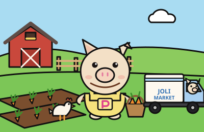
Jogo de fazenda em voxel, com mapa isométrico, no estilo da Fazendinha Feliz: o porquinho Ed planta, cuida das galinhas e das vacas e chama o irmão Beto para vender tudo no Joli Market.
bi-bi!
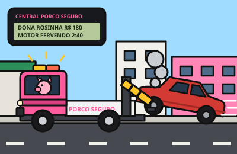
Jogo de guincho 3D numa cidade de porquinhos: o pager da central manda os chamados, você engata o carro e leva cada um à borracharia, à auto elétrica ou à funilaria antes do prazo. O que sobra no fim do turno vira melhoria na oficina.
oinc!
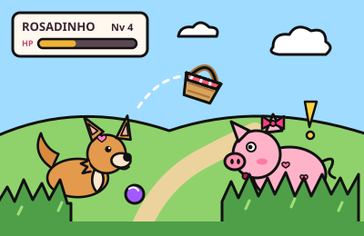
RPG de pixel art num console de bolso: a Luma sai pelo mato alto da Vila dos Rolis para pegar os 10 porquinhos da região, enfrentar o Pombão e encher o caderninho. O Milton e o Pelúcio também estão por lá.
novo!
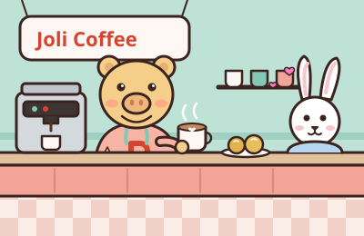
Jogo de cafeteria 3D no estilo do Overcooked, só que sem pressa: o porquinho Pelúcio atende clientes de pelúcia e prepara espresso, pão de queijo e latte no balcão da Joli Coffee.
vrum!
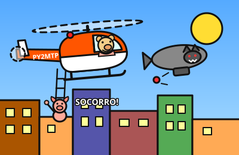
Jogo de helicóptero 3D no estilo do Air Rescue do Master System: o porquinho Milton pilota o PIG-MTP, resgata porquinhos pela cidade, desvia da gangue do Lobo e termina no comando de um jato.
au!
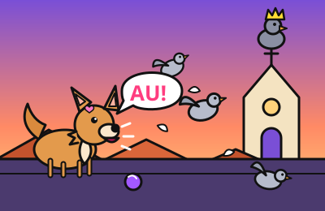
Jogo de plataforma 3D: a chihuahua Luma espanta pombos da praça aos telhados, ganha pulo duplo, Super Bafo e enfrenta o Pombo-Rei.
Simulações para entender como as coisas funcionam por dentro. Ver a página de simulações →
próximo!
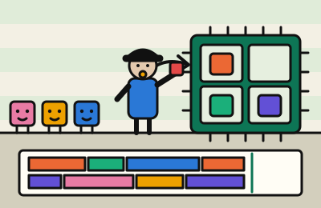
Quando há mais trabalho do que processador, alguém decide quem roda. São 22 escalonadores em ordem cronológica, do FCFS de 1956 ao EEVDF e ao sched_ext, passando por tempo real, roubo de trabalho, event loop e big.LITTLE. Cada decisão é explicada passo a passo, cada algoritmo tem sua explicação com referências, e dá para comparar todos na mesma carga ou escrever o seu.
nhac!
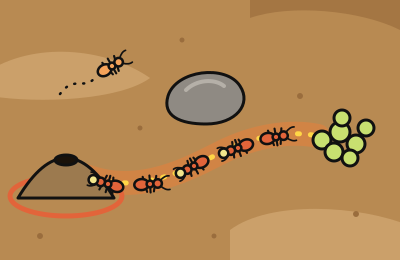
Uma colônia de formigas em 3D que acha comida só pelo cheiro: cada formiga deixa uma trilha para casa e outra para a comida, e o caminho bom aparece sozinho. A simulação roda na GPU com dezenas de milhares de formigas e tem morros que cansam, operárias, soldados e batedoras, colônias rivais em guerra, o experimento da ponte dupla e uma câmera que segue uma formiga.
plim!
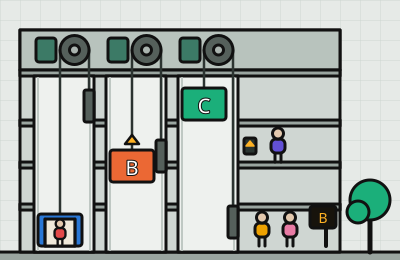
Um prédio em 3D com até oito elevadores e 25 andares, da cabine de botão único ao despacho em grupo que escolhe o elevador de cada pessoa. Dá para trocar o algoritmo, mudar o tráfego, comparar a espera de cada um e provocar falhas: rompa os cabos em câmera lenta e veja o regulador e as cunhas segurarem a cabine.
zum!
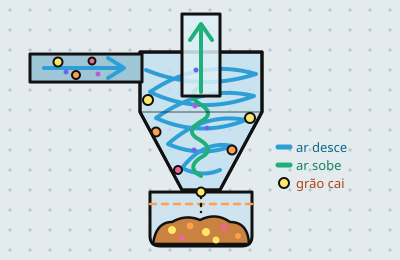
Por que o aspirador ciclone não precisa de saco: o ar faz a curva e o grão não. Cada grão é calculado em unidades reais e mostrado em câmera lenta, com um passo a passo que isola cada etapa, da entrada lateral ao reservatório, e mostra por que o tamanho do grão decide se ele fica ou passa.
ronco!
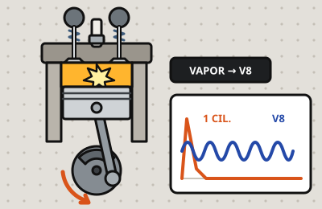
Sete motores em 3D, em câmera lenta, cada um resolvendo o problema do anterior: da máquina a vapor ao 2 tempos, ao 4 tempos e aos motores de 2 a 8 cilindros, em linha, boxer e em V. Um gráfico de torque e um mapa dos tempos de cada cilindro mostram por que mais cilindros deixam o motor mais suave.
vrum!
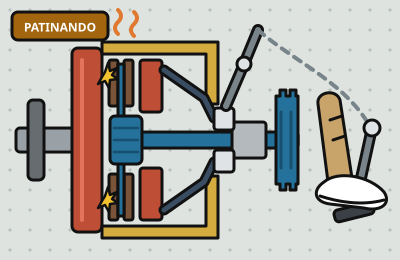
Uma embreagem monodisco em 3D que dá para pisar, soltar, acelerar e desmontar. O modelo calcula força de aperto, torque, rotação e calor em tempo real: segure o pedal na zona de atrito para sair com o carro, solte de uma vez para o motor morrer ou patine até queimar o disco.
giro!
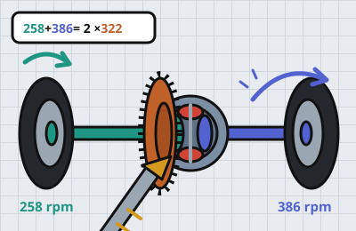
O diferencial de um eixo traseiro em 3D, em câmera lenta, com uma apresentação que monta o conjunto peça por peça: da carroça ao eixo rígido, dos satélites ao blocante e ao controle de tração, cada peça resolvendo o problema da anterior.